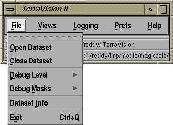
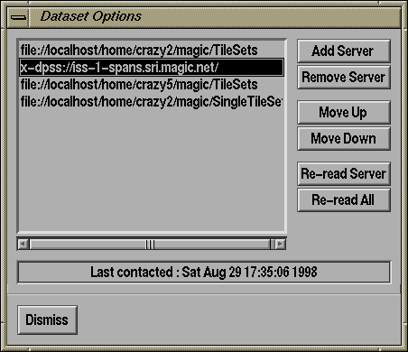

The Database Options dialog lets you manage the contents of your Dataset Database. It is accessed by clicking on the "Options..." button of the File/Open TV menu.

The main display is a list of servers that holds one or more TerraVision style terrain datasets. For a localdisk server, this will be something like /homedir/magic/TileSets; for an http server, this will look like http://www.ai.sri.com/TileSets; and for a DPSS server this will look like x-dpss://iss-1.sri.magic.net/.
You can add and remove servers from the database by using the "Add Server" and "Remove Server" buttons. When you add a new server, you will be asked if you wish to read the server now and update the database with all of the datasets stored at that location. When you remove a server, you will be asked to confirm the operation before it is completed.
You can re-order a server in the list, i.e. make it the first server or the last server, by using the "Move Up" and "Move Down". The effect of this is not immediately evident; however, when you next do a "Re-read All" all of the dataset instances in the Open TV dialog will be listed in the order you specify here.
The "Re-read Server" and "Re-read All" buttons are used to tell TerraVision to connect to the specified server(s) and read all of the datasets on that server. If the server is contactable, then TerraVision will first delete all instances already in the database that describe datasets on that server. The new list is then built from scratch. This ensures, that any dataset removals will propagate from the server to the database. If a server cannot be contacted, then the database will not be changed. This ensures that we don't delete information from the database just because a server is temporarily down.
The "Last contacted:" display at the bottom of the dialog states the date and time when the selected server was last successfully contacted. This will be n/a if the server has not been contacted at all.